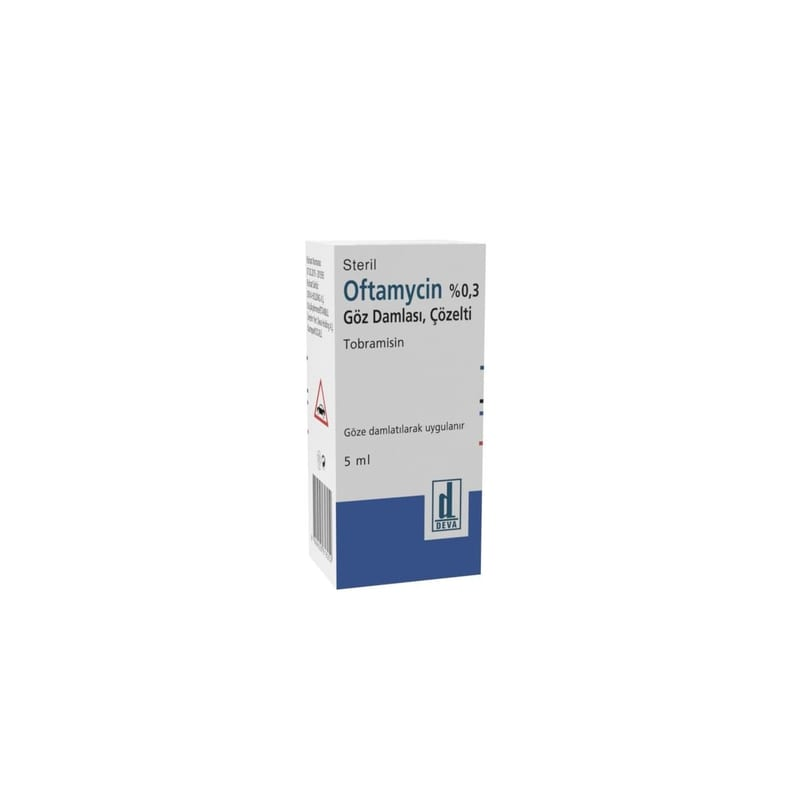

Oftamycin %0,3 Göz Damlası, Çözelti, 1 Şişe

Ne için kullanılır
KT · Bölüm 1OFTAMYCİN, gözün/gözlerin ve etrafının yüzeysel bakteriyel infeksiyonlarının tedavisinde kullanılır.
OFTAMYCİN anti-infektifler adı verilen ilaç grubunda yer almaktadır. Anti-infektifler grubu göz(ler)e hastalık bulaştıran mikroorganizmaların büyük bir kısmına karşı aktif olan antibiyotikleri (bu üründe tobramisin) içerir.
OFTAMYCİN berrak ve renksiz bir çözeltidir. Partikül gözlenmemelidir.
Ambalaj malzemesi olarak turuncu, vidalı kapak ile kapatılmış ve 5 mL’lik göz damlası içeren opak, beyaz renkli, damlalıklı düşük yoğunluklu polietilen şişe kullanılmaktadır.